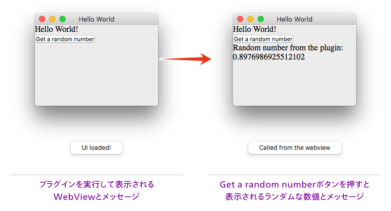
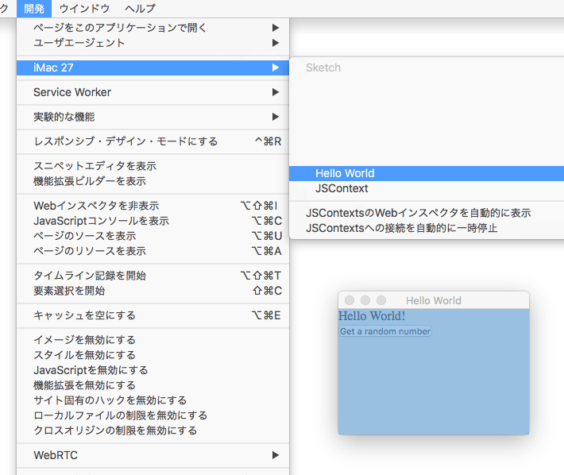

Font Mixerという、ひらがなやカタカナといった文字種を指定して、フォントファミリーやサイズなどを変更できるSketchプラグインをつくりました。
そのUIをWebViewで作成したので、その手順と注意点をまとめてみました。
- プラグインのダウンロード
- Font Mixer - Sketch Plugin
- 紹介記事
- Sketchで文字種を指定して混植ができるプラグインをつくった
現在、モダンなプラグイン開発環境として提供されているのが、skpmというプラグインマネージャです。Node.jsのエコシステムを利用しており、Babelで書いたものをWebpackでビルド、Sketchにて実行できるES5相当のJavaScriptにPolyfillしてくれます。
また、Sketch用のNodeモジュールがあり、今回はsketch-module-web-viewというUIをWebView（HTML + CSS + JavaScript）で構築するためのモジュールを使って進めました。
開発環境の準備
skpmとリソースのインストール
当然ながらNode.jsが必要ですので、インストールしましょう。すでにインストールされている場合でも、V6以上が必要です。
続けてskpmをインストールします。
$ npm install -g skpmskpmがインストールできたら、テンプレートを指定してWebViewモジュール込みでスケルトンを生成します。
$ skpm create my-plugin --template=skpm/with-webview次のメッセージが表示されれば、インストール終了です。これでSketchを立ち上げて「my-plugin」を実行すれば、WebViewのウィンドウが立ち上がるようになります。

ちなみにSketchプラグインフォルダには、ビルドされたプラグインのエイリアスが作成されていますので、開発環境からコピーする必要はありません。
✔ Done!
To get started, cd into the new directory:
cd my-plugin
To start a development live-reload build:
npm run start
To build the plugin:
npm run build
To publish the plugin:
skpm publishUserDefaultsの変更
Sketchは起動時しかプラグインを読み込みません。したがって、プラグインの内部が変更になっても再読み込みしないため、変更を反映するために再起動が必要です。さすがにそれでは面倒なので、UserDefaultsの設定を変更し、常時再読み込みするようにしておきます（元の設定に戻すには、最後のYESをNOにして実行します）。
defaults write ~/Library/Preferences/com.bohemiancoding.sketch3.plist AlwaysReloadScript -bool YESwatchとログ
開発を進めるにあたって、ファイルを更新したら勝手にビルドされるよう、次のコマンドを実行してwatchしておきましょう。ちなみにnpm run startをすると、ファイル更新時にプラグインも実行してくれますが、WebViewが絡んでいるとSketchが落ちます……
$ cd my-plugin // ディレクトリへ移動
$ npm run watchまた、次のコマンドを実行しておくと、自動的にログを取得してくれます（コンソール.appの代替）。
$ skpm log -fSketchからWebViewへ値を渡す
先にもカッコ書きしましたが、WebViewという名前の通り、見慣れたHTML + CSS + JavaScriptでUIを作成できます（要はSafari）。
では、SketchとWebViewとの値のやりとりはどうするかというと、JavaScriptを通じて行います。
SketchからWebViewへ値を渡すときは、executeJavaScriptというメソッドを使い、次のように指定します。
executeJavaScript(`JavaScript側のメソッド名('引数')`)
プラグインを実行し、WebViewが表示されるときにexecuteJavaScriptを実行するには次のようにします（テンプレートの記述を簡素化）。
import BrowserWindow from 'sketch-module-web-view'
const UI = require('sketch/ui')
export default function(context) {
var browserWindow = new BrowserWindow()
const webContents = browserWindow.webContents
browserWindow.once('ready-to-show', () => {
// 引数決め打ち
webContents.executeJavaScript(`webViewFnc('args')`)
// 引数に変数を使う
webContents.executeJavaScript(`webViewFnc(${hoge})`)
// 複数の引数
webContents.executeJavaScript(`webViewFnc('args', ${hoge})`)
}
}
WebView側で受け取るには、executeJavaScriptで指定したメソッドをWindowオブジェクトに追加します。渡された値に応じて、要素を生成したり属性を変更したりする処理を記述します。
window.webViewFnc = function (args) {
// 処理を記述
}
試してませんが、おそらくjQueryやVue.jsなんかも使えるんじゃないかと思います。
WebViewからSketchへ値を渡す
WebViewからSketchへ値を渡すには、WebViewのJavaScriptでpluginCall()を使い、1つめの引数にSketch側でキャッチするイベント名、2つめの引数に渡す値を設定します（多分引数は複数指定できるはず）。
pluginCall('イベント名', '引数')
Sketch側ではonを使い、イベントとしてWebViewから値を受け取り処理を行います。
webContents.on('WebView側で設定したイベント名', (args) => {
// 処理を記述
})
例えばWebView側のログもコンソールで表示したい場合は、次のように設定します。
// WebView側
pluginCall('nativeLog', message)
// Sketch側（上のサンプルの続き）
webContents.on('nativeLog', (msg) => {
log(msg)
})
WebViewのデバッグ
Safariの「開発」を有効にしておくと、「開発 → 自分のマシン名 → WebViewのHTMLで設定しているタイトル」を選択することで、いつものインスペクタでデバッグが可能です。

ただ、WebViewのウィンドウはSketchに属している関係でアクティブにならないため、ちょっと使いづらいです。
WebViewを使うときの注意点
SketchからWebViewへなぜか値が渡らない問題
Sketch側でJavaScriptのオブジェクトだけを扱っている場合はいいのですが、ちょっと凝ったことを実装しようとすると、どうしてもCocoaのオブジェクトが混じります（例えばマシンで使えるフォント一覧を取得するなど）。
そしてCocoaオブジェクトを引数として使うと、なぜかWebView側にうまく値が渡らず、WebViewのスクリプトの実行が止まってしまいます。
そんなときは、引数の型を調べてみましょう。
// JavaScript
log(typeof hoge)
// Cocoa
log(hoge.class())
JavaScriptオブジェクトだと、.class()でエラーが出ます。この場合は、値が本当にうまく渡ってないので、Typoとかがないかスクリプトをよく見直してください。
Cocoaオブジェクトの場合、typeofではobjectと表示され、.class()ではクラス名にNSという文字（例えば__NSCFString）が含まれます。
正しい解決方法がどうかはわかりませんが、とりあえず次のように配列に突っ込んでからJSONへ変換し、さらにNSStringにしたものを引数として使うとうまくいきました（どなたか正解を教えて欲しい）。
// ↓これが`__NSCFString`になる
var font_name = sel[0].fontPostscriptName()
// ので、とりあえず配列に突っ込んでJSONに変換
var array = Array(font_name);
var data = NSJSONSerialization.dataWithJSONObject_options_error_(array, 0, nil);
// ↓このJSONを引数として渡す
var json = NSString.alloc().initWithData_encoding_(data, 4);
toString()を使おうが何をしようがだめだったので、素直にJSONで渡したほうがよいです（ちなみにこのJSONも__NSCFStringなんですよね……なぜ）。
WebViewの再読込はSketchの再起動が必要
これが超面倒なんですが、WebViewのHTML・CSS・JavaScriptを修正した場合、Sketchの再起動が必要です。
「あれ、UserDefaults変更したやん？」とお思いのことでしょう。実は再読み込みをするのはSketch側のスクリプトのみで、WebViewのリソースは再読み込みをしてくれません。
したがってWebViewはSafariで開発し、Sketchで微調整を行うほうがよいでしょう。
というわけで、WebViewでプラグインUIを開発してみての記録でした。